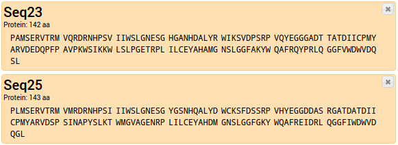
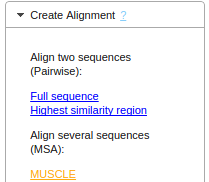
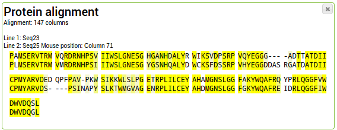

Enter at least two sequences to align together. If you don't have any sequences and just want to try it out, you can import some example sequences by clicking on "Load Examples", next to the "Add"-Button.
You can enter your sequences one by one or as Multi-FASTA together. See Help>Sequence Import for more details on how to import sequences.


To deselect an entry, click on it again; the background changes to white again. Select at least two sequences to produce an alignment.
For more details about selecting entries see Help>Selecting entries
Help>Renaming entries describes how to change an entry name.

For a detailed explanation of the options "Full sequence (CFE Alignment)", "Highest similarity region (Local Alignment)" and "MUSCLE (Multiple Sequence Alignment)", see the Tool documentation.
A new alignment entry is added to your project.

The yellow markings represent conservation of the respective column.